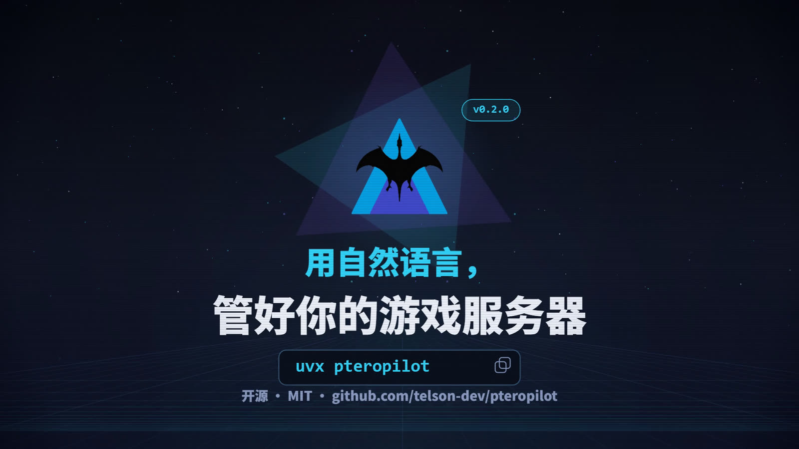
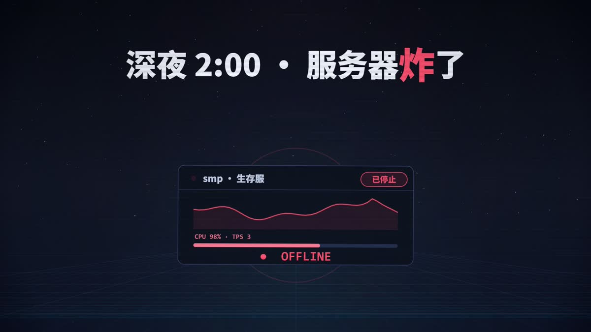
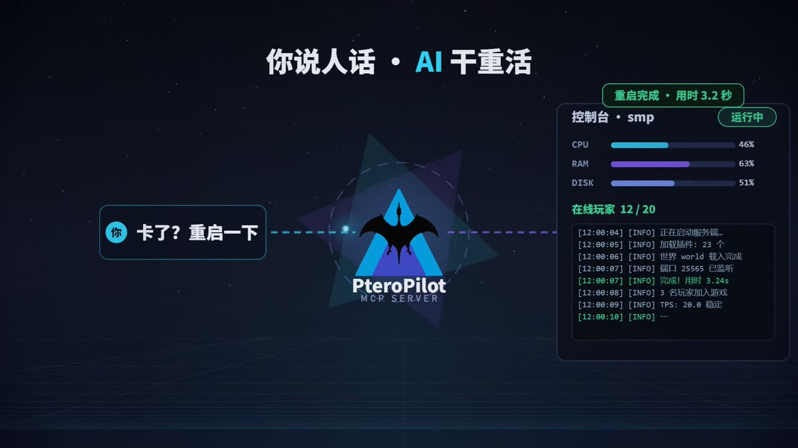
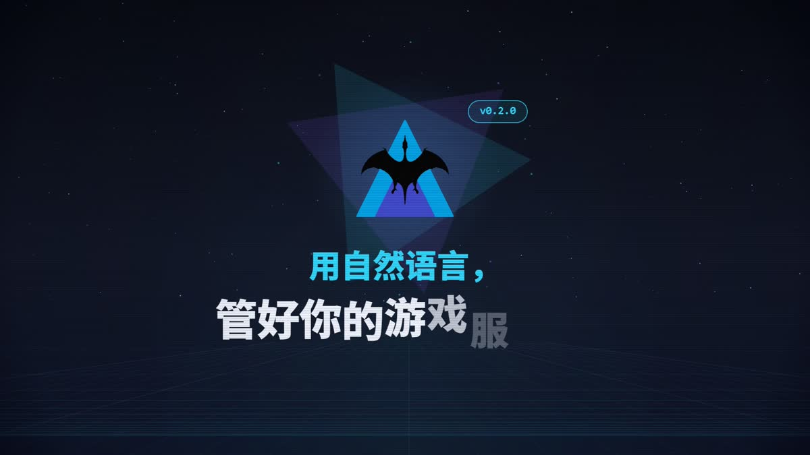
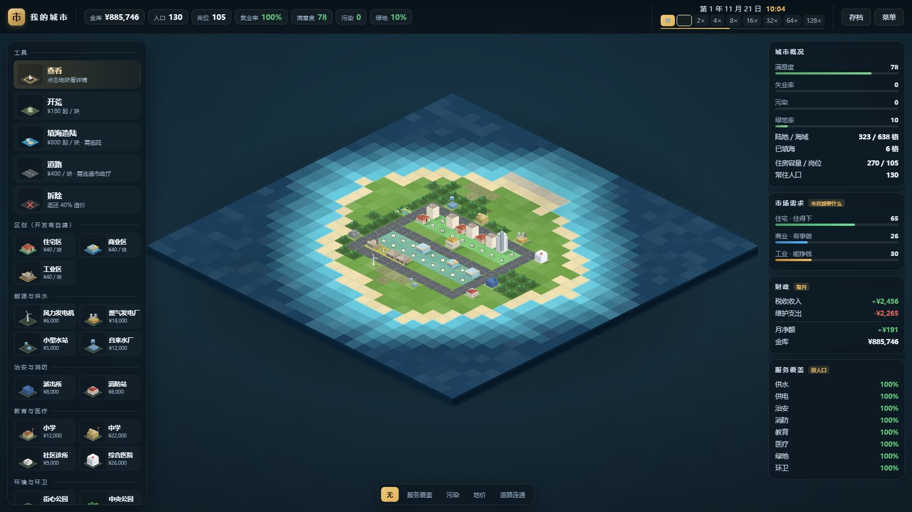

telson
telson
作品 · Work
做过的东西
五个项目：一个能装进 AI 对话的开源工具，一个带图形界面的付费客户端，一条代码渲染出来的宣传片， 一台不靠框架的网站，以及一个能真的玩下去的城市经营游戏。
03 · 视频管线
30 秒产品宣传片
整支片子由代码生成：1080P60、1800 帧、分镜与动效全部写成确定性函数， 配乐用纯代码合成（126 BPM，drop 精确落在第 10 秒），全程没有剪辑软件、没有素材库、没有版权风险。



04 · 本站
telson.dev
你正在看的这台网站。手写 HTML / CSS / JS，没有框架、没有构建步骤、没有外部字体和依赖，
一个 rsync 就能部署。
- 四个页面、一个 CSS 文件、一个 30 行的 JS
- 响应式布局，移动端可读
- 支持中英双语切换（Pteropilot 页）
- 首屏无外部请求，加载快
技术栈
自己写站点的好处：想改哪儿改哪儿，不用跟框架斗智斗勇。


玩法要点
- 土地是自然的：草地 / 沙滩 / 林地 / 缓丘，建设前先开荒
- 你只划区：住宅区会长出低层住宅楼 → 多层公寓 → 高层住宅
- 配套要跟上：道路必须连到市政厅，缺水缺电的建筑会停摆
- 海是边界：填海造陆 ¥800 起，每往深海一格 +¥700
技术做法
- 河道与海岸线用极坐标 + 角向谐波 + 噪声生成，同种子逐字节一致
- 体块建筑三面分色，地形整层离屏缓存
- 昼夜用合成图层，静态渐变与投影烘成位图：一帧约 16.5ms
- 存档走 localStorage，3 个手动槽位 + 自动档